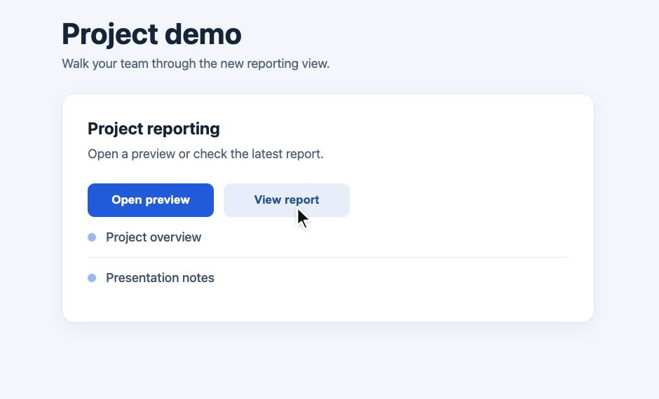

Destaque no ponteiro
Um círculo suave acompanha o ponteiro, mesmo entre os cliques.
Capture o áudio do microfone e do sistema enquanto destaca o cursor, os cliques e o arraste. Salve a gravação com os efeitos. Agora você também pode incluir a imagem da sua câmera.
Você pode usar sem comprar o app para iOS. Teste por 7 dias sem cartão.
macOS 15 ou posterior · Apple Silicon e Intel
Um círculo suave acompanha o ponteiro, mesmo entre os cliques.
Cada clique esquerdo e direito aparece na hora.
O arrasto desenha uma linha que some a partir da ponta mais antiga.
Configure os efeitos dos cliques esquerdo e direito separadamente. Você pode desligar o efeito de qualquer um dos botões.
Altere os ajustes e depois clique, clique com o botão direito ou arraste na tela.
Mantenha o ponteiro parado e pressione o botão esquerdo por cerca de meio segundo para ampliar a área ao redor dele. Clique com o botão direito para voltar ao tamanho normal.
Ative o zoom em Efeitos ou na barra de menus e escolha 1,5×, 2×, 2,5×, 3× ou 4×. No primeiro uso, siga as instruções do app para liberar a gravação da tela e a Acessibilidade.


Deixe mais fácil acompanhar onde o Claude aponta e clica durante uma demonstração no navegador.
Instalar pela Chrome Web Store
Troque o cursor laranja do Claude por uma seta preta com contorno branco. O balão do cursor e o anel de clique ficam ocultos.
 Ampliar imagem
Ampliar imagem
Desative o brilho laranja com um controle separado. O indicador de atividade e o botão de parar do Claude continuam disponíveis.
 Ampliar imagem
Ampliar imagem
Você precisa do Claude in Chrome. Abra a página da demonstração e, na barra de ferramentas do Chrome, use a extensão para ativar as opções desejadas nessa página.
 Ampliar imagem
Ampliar imagem
Grave a tela inteira, uma janela ou a área delimitada ao arrastar.
Escolha o microfone e confira o nível de entrada antes de gravar. Ative o áudio do sistema para incluir sons de apps e do navegador no Mac.
Escolha Full HD, 4K ou a resolução original, a 30 ou 60 quadros por segundo. O vídeo é salvo como MP4 na pasta que você escolher.
Configure uma contagem regressiva de 3, 5 ou 10 segundos, atalhos de início e fim e um temporizador para parar automaticamente. Pause ou retome pelo indicador móvel de gravação. O tempo pausado fica fora do vídeo.
Escolha a câmera integrada ou externa e confira a imagem na prévia ampliada ao vivo. Ajuste a posição e o tamanho e escolha um retângulo horizontal, círculo, retângulo vertical, coração ou estrela. Você também pode desfocar o fundo.
A qualidade da gravação depende da resolução de origem.
Abra o vídeo no editor de gravações e salve a versão final em um arquivo MP4 separado.
Defina ou limpe as marcas de início e fim separadamente na linha do tempo. Após o corte, a duração é atualizada e você pode reproduzir o resultado na hora.
Cubra dados pessoais ou notificações com um retângulo preto. Escolha a posição e o intervalo em que a máscara aparecerá no vídeo.
Ative “Incluir câmera” nos ajustes de gravação. Em “Ajustar câmera…”, escolha a câmera e acerte a posição e o tamanho da imagem. Permita o acesso à câmera quando o macOS solicitar.
Sim. O gravador captura o microfone selecionado. Ative o áudio do sistema para incluir o som reproduzido pelo Mac. Feche outras fontes de som antes de gravar a demonstração.
Confira o microfone selecionado e o áudio do sistema. Em Privacidade e Segurança do macOS, confira as permissões de microfone e de gravação de tela e áudio do sistema para o Tap Pointer. Faça e reproduza um teste curto.
Sim. Use o destaque do cursor e os efeitos de clique ao vivo nas apresentações. Se gravar com o Tap Pointer, os efeitos também ficam no MP4 salvo.

Teste todos os recursos por 7 dias. Depois, você pode assinar por US$ 1,49 por mês, com impostos inclusos.
Se você já ativou o app para Mac pelo iOS, pode continuar usando a versão mais recente de graça.
Guia de instalação no Mac
Confira o acesso e o status da compra, abra a página oficial de compra ou gerencie a assinatura pelo app. Você pode exibir o código de recuperação e usá-lo para restaurar a assinatura em outro Mac.
Procure uma nova versão nas configurações ou na barra de menus e abra a página oficial para baixar. Permita notificações no macOS para receber avisos de atualização.
Use o idioma do Mac ou escolha entre sete idiomas. Você também pode copiar o e-mail do suporte e configurar os relatórios de falhas no app.